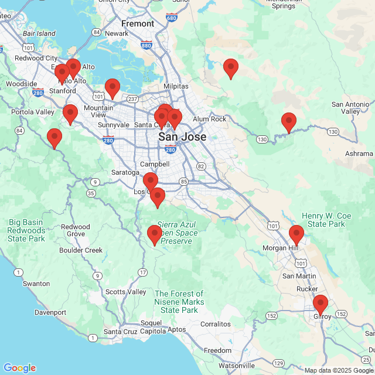

Station Locations Overview
| Station Name | Station ID | Start Year | End Year | Total Years of Data |
|---|
This project is a data analysis tool designed to visualize and understand long-term climate trends in Santa Clara County. By processing historical weather data from NOAA's Global Historical Climatology Network (GHCND), we can observe how the frequency of warm and hot days has changed over several decades.
The primary metrics analyzed are DX70 (the number of days in a year where the maximum temperature exceeded 70°F) and DX90 (days exceeding 90°F). These serve as clear indicators of shifting local weather patterns.
Below, a map displays the locations of the weather stations providing this data. The table offers a sortable summary. Click on any station to view a detailed, year-by-year analysis, complete with a scatter plot and a calculated trend line showing the average change per year.
| Station Name | Station ID | Start Year | End Year | Total Years of Data |
|---|